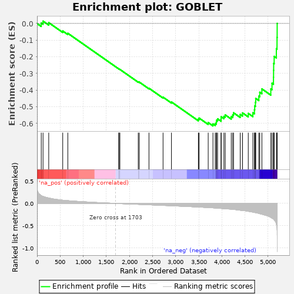

| | | Dataset | al5_v_al2 |
| Phenotype | NoPhenotypeAvailable |
| Upregulated in class | na_neg |
| GeneSet | GOBLET |
| Enrichment Score (ES) | -0.6144462 |
| Normalized Enrichment Score (NES) | -1.7834085 |
| Nominal p-value | 0.0010427529 |
| FDR q-value | 8.2105264E-4 |
| FWER p-Value | 0.004 |
Table: GSEA Results Summary

Fig 1: Enrichment plot: GOBLET
Profile of the Running ES Score & Positions of GeneSet Members on the Rank Ordered List
| PROBE | GENE SYMBOL | GENE_TITLE | RANK IN GENE LIST | RANK METRIC SCORE | RUNNING ES | CORE ENRICHMENT | | 1 | Spink4 | | | 91 | 0.176 | 0.0030 | No |
| 2 | Agr2 | | | 130 | 0.158 | 0.0142 | No |
| 3 | Tff3 | | | 253 | 0.122 | 0.0049 | No |
| 4 | Smim14 | | | 556 | 0.073 | -0.0451 | No |
| 5 | Wars | | | 666 | 0.063 | -0.0588 | No |
| 6 | Gale | | | 1769 | -0.003 | -0.2724 | No |
| 7 | Cmpk1 | | | 1774 | -0.004 | -0.2727 | No |
| 8 | Tsta3 | | | 1794 | -0.005 | -0.2759 | No |
| 9 | Galnt12 | | | 2190 | -0.021 | -0.3501 | No |
| 10 | Serp1 | | | 2212 | -0.022 | -0.3516 | No |
| 11 | Arf4 | | | 2422 | -0.031 | -0.3885 | No |
| 12 | Tmsb10 | | | 2727 | -0.045 | -0.4422 | No |
| 13 | Uap1 | | | 2909 | -0.053 | -0.4711 | No |
| 14 | Txndc5 | | | 3491 | -0.081 | -0.5743 | No |
| 15 | Dnajc10 | | | 3507 | -0.082 | -0.5676 | No |
| 16 | Guk1 | | | 3704 | -0.093 | -0.5946 | No |
| 17 | Stard3nl | | | 3807 | -0.100 | -0.6027 | Yes |
| 18 | AW112010 | | | 3856 | -0.103 | -0.5999 | Yes |
| 19 | Oit1 | | | 3880 | -0.105 | -0.5920 | Yes |
| 20 | Cmtm7 | | | 3885 | -0.105 | -0.5804 | Yes |
| 21 | Slc12a8 | | | 3907 | -0.107 | -0.5720 | Yes |
| 22 | Qsox1 | | | 3983 | -0.113 | -0.5732 | Yes |
| 23 | Kdelr2 | | | 3984 | -0.114 | -0.5599 | Yes |
| 24 | Creld2 | | | 4044 | -0.119 | -0.5574 | Yes |
| 25 | Tpd52 | | | 4072 | -0.121 | -0.5484 | Yes |
| 26 | Smim6 | | | 4203 | -0.131 | -0.5583 | Yes |
| 27 | Galnt7 | | | 4235 | -0.133 | -0.5487 | Yes |
| 28 | Sh3bgrl3 | | | 4252 | -0.136 | -0.5358 | Yes |
| 29 | Ergic1 | | | 4397 | -0.154 | -0.5457 | Yes |
| 30 | Tspan13 | | | 4447 | -0.159 | -0.5365 | Yes |
| 31 | Tmed3 | | | 4571 | -0.178 | -0.5395 | Yes |
| 32 | Sdf2l1 | | | 4671 | -0.196 | -0.5356 | Yes |
| 33 | Sec61b | | | 4705 | -0.204 | -0.5180 | Yes |
| 34 | Xbp1 | | | 4711 | -0.206 | -0.4948 | Yes |
| 35 | Tmed9 | | | 4726 | -0.208 | -0.4731 | Yes |
| 36 | Ostc | | | 4733 | -0.209 | -0.4498 | Yes |
| 37 | Slc50a1 | | | 4800 | -0.226 | -0.4360 | Yes |
| 38 | Tram1 | | | 4820 | -0.232 | -0.4125 | Yes |
| 39 | Nans | | | 4866 | -0.244 | -0.3926 | Yes |
| 40 | Krtcap2 | | | 5059 | -0.316 | -0.3927 | Yes |
| 41 | Ssr2 | | | 5085 | -0.332 | -0.3585 | Yes |
| 42 | Ddost | | | 5117 | -0.353 | -0.3230 | Yes |
| 43 | Pdia6 | | | 5119 | -0.356 | -0.2814 | Yes |
| 44 | Tm9sf3 | | | 5121 | -0.358 | -0.2395 | Yes |
| 45 | Ssr4 | | | 5132 | -0.374 | -0.1975 | Yes |
| 46 | Manf | | | 5179 | -0.469 | -0.1513 | Yes |
| 47 | Pdia3 | | | 5194 | -0.597 | -0.0838 | Yes |
| 48 | Calr | | | 5197 | -0.719 | 0.0004 | Yes |
Table: GSEA details [plain text format]
Fig 2: GOBLET: Random ES distribution
Gene set null distribution of ES for GOBLET